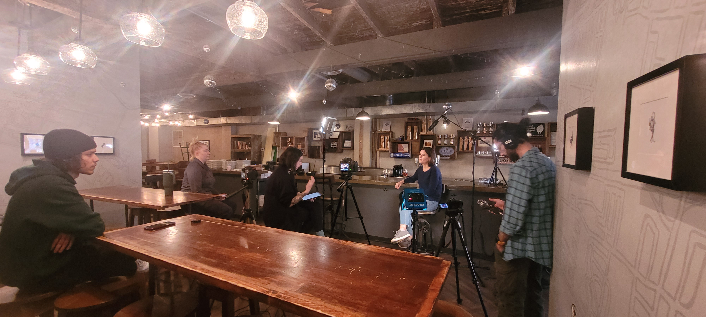

The third semester I worked on a group project that was documentary style video. We chose to do it on
a brewpub and its owner in the Ottawa area called Tooth and Nail. The story is of Matt Tweedy and his
discovery of wanting to start the business and some insight into the brewing process he is passionate
about. We had six weeks to complete the project among our other classes and their projects. We made it
to all weekly meetings with the professor and had all the documentation ready for presentation. At
times we were even ahead of schedule. One example is I had some samples of the type of motion graphics
and infographic ready to show the professor. He was so encouraged by our work in progress that he
slotted us for the first to present to the two Video Production classes combined presentation that one
of the program coordinators came to watch some of them. I am very proud of what we produced together.
Filming Day
My roles in the production of the video span the whole process from the brainstorming to the final
edit. The on-set roles I performed were setting up and monitoring the main camera used in the
interview and to help set up the lighting. I also helped capture some of the first set of b-roll. Two
highlights I have from this part are nailing the creative treatment with the shallow depth of field
and catching the LED panel reflecting in the glasses of our stand-in. The creative treatment we were
aiming for was a soft background while still having it present in the shot. We also wanted it to have
a warm and casual conversational feel with the subjects being interviewed. The subject of our
interview also wears glasses. The way I worked around this is placing a reflector at the foot of the
light and turning the panel to aim directly at it. This aided the key light which we had set at a
higher angle by filling the face from the bottom and front, softening up the shadows. Making sure
these were taken care of in-camera made post production that much easier.

Motion Graphics
My major role was creating the motion graphics and animations which wasn’t initially slated for me to do.
I created our group’s logo and made the animation for it. The original design was made using vector
illustrations that translated into After Effects easily. I kept the animation simple and to the point but
feel like it is impactful. One of the first motion graphics I had in mind when brainstorming was to take
the existing logos the brewery had already on their cans. The art style used was a vintage, had-drawn look
to them. To highlight the style, I created what looked like paper cutouts of the different layers I felt
were there.
I used Illustrator to do this, since at this point, I didn’t know that you could import Photoshop
documents and the layers would be treated the same way. Outside of the little bit we had done in class,
this was the first animation that I made in After Effects. I created a few of these, one of which I also
took initiative to learn Duik Angela to make. One of the animations was used by a group member to create
the lower thirds.
I followed some tutorials to create the map animation and for the inspiration of the timeline infographic.
I cut the audio from the interview to make it concise and edited it. I synced the animation timing to the
key moments in the audio clip. The images echo that of the branding already established by the brand. To
further bring in the branding, I used a bright red for the pins and the markers on the map, as well as the
bold red line of the timeline that looks like the ones on the top of the can.
Finally, I did the credits. I modified a template to feel like the bubbles and foam of a golden beer. As a
team we didn’t see obvious places that my logo animations could work but wanted to make sure they were
used. At the time of the decision, I only had three created and needed a total of five to match the number
of us that were on the team. Since we each played a part in so many roles, we opted to not have titles. I
felt that it was important to include thanks to the establishment, the creator of the logos, the school,
and the Algonquin peoples on top of those we had interviewed. Unfortunately, our main subject’s father had
passed away during the postproduction of this piece. We included a tribute to him before the credits roll
since he was an important figure in our subject’s life.
Editing
I had the role of final editing. The main tasks I had were color grading the second camera that we used
and to keyframe all of the cuts made in the audio. Due to the differences in cameras, there was a dramatic
difference in the white balance between the two. Since the video was already cut and sequenced, I used an
adjustment layer to quickly apply the same settings over all of the clips. I then went back and tweaked
the ones that were a little further off. Unfortunately, the room tone we initially took was no longer with
the project. The main way I got around this was by finding a pause between a question being asked and the
answer that followed. It wasn’t the ideal situation, but at least there was room tone under all of the
cuts and the keyframes done. Finally, I added the music. I identified the key moments and made sure to
place the more emotional break in the music on those parts and blended the ends of the music with the
next. We limited our video to have two tracks, one was used for the interview and the second was used for
the animations and the credits. We wanted to make sure there was a energizing rock tune but still
cinematic to carry along the narrative,
Challenges
There were some challenges with this project that made for good learning experiences. When working on a
large project, I like to work as if the timeline is about a quarter less than what is given. I’ve
experienced unexpected setbacks or interruptions, and by working with the decrease in allotted time
allowed me to stay on track when that happens. If there is no disruption, it allows for more polishing
time. Unfortunately, when working in a group not everyone shares this method, and it can be quite
stressful. One way I managed this was my self-guided learning on After Effects even though I didn’t have
the footage at the time. I built a template that the timing could be modified based on the audio we got. I
also worked on other projects that had a similar deadline. The other challenge was limiting the working
hours on this project. It became a passion project as well as wanting to make something that would pass
the assignment. The number of hours spent on this is outside the realm of what the original scope of the
promo video offered to the subject in the video.
Overall, this project was a great learning experience and has led me to learning a lot more about After
Effects and motion graphics.